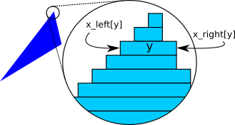
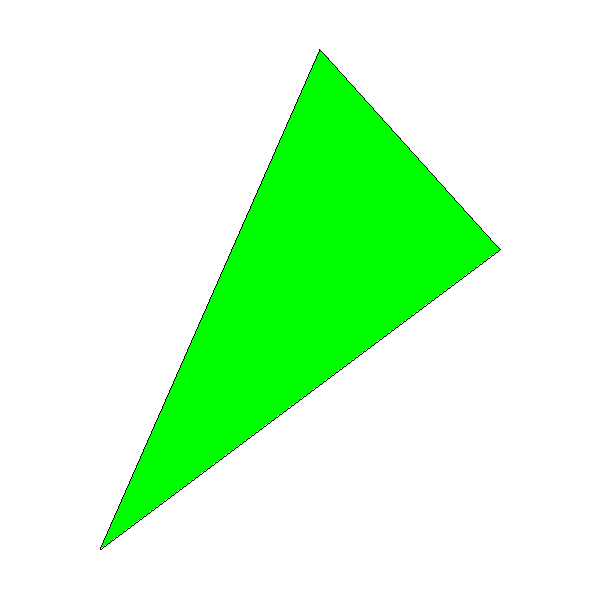

Filled Triangles
In the previous chapter, we took our first steps toward drawing simple shapes—namely, straight line segments—using only PutPixel and an algorithm based on simple math. In this chapter, we’ll reuse some of the math to draw something more interesting: a filled triangle.
Drawing Wireframe Triangles
We can use the DrawLine method to draw the outline of a triangle:
DrawWireframeTriangle (P0, P1, P2, color) {
DrawLine(P0, P1, color);
DrawLine(P1, P2, color);
DrawLine(P2, P0, color);
}
This kind of outline is called a wireframe, because it looks like a triangle made of wires, as you can see in Figure 7-1.
This is a promising start! Next we’ll explore how to fill that triangle with a color.
Drawing Filled Triangles
We want to draw a triangle filled with a color of our choice. As is often the case in computer graphics, there’s more than one way to approach this problem. We’ll draw filled triangles by thinking of them as a collection of horizontal line segments that look like a triangle when drawn together. Figure 7-2 shows what one such triangle would look like if we could see the individual segments.

The following is a very rough first approximation of what we want to do:
for each horizontal line y between the triangle's top and bottom
compute x_left and x_right for this y
DrawLine(x_left, y, x_right, y)
Let’s start with “between the triangle’s top and bottom.” A triangle is defined by its three vertices \(P_0\), \(P_1\), and \(P_2\). If we sort these points by increasing value of \(y\), such that \(y_0 \le y_1 \le y_2\), then the range of values of \(y\) occupied by the triangle is \([y_0, y_2]\):
if y1 < y0 { swap(P1, P0) }
if y2 < y0 { swap(P2, P0) }
if y2 < y1 { swap(P2, P1) }
Sorting the vertices this way makes things easier: after doing this, we can always assume \(P_0\) is the lowest point of the triangle and \(P_2\) is the highest, so we won’t have to deal with every possible ordering.
Next we have to compute the x_left and x_right arrays. This is slightly tricky, because the triangle has three sides, not two. However, considering only the values of \(y\), we always have a “tall” side from \(P_0\) to \(P_2\), and two “short” sides from \(P_0\) to \(P_1\) and \(P_1\) to \(P_2\).
There’s a special case when \(y_0 = y_1\) or \(y_1 = y_2\)—that is, when one of the sides of the triangle is horizontal. When this happens, the two other sides have the same height, so either could be considered the “tall” side. Should we choose the right side or the left side? Fortunately, it doesn’t matter; the algorithm will support both left-to-right and right-to-left horizontal lines, so we can stick to our definition that the “tall” side is the one from \(P_0\) to \(P_2\).
The values for x_right will come either from the tall side or from joining the short sides; the values for x_left will come from the other set. We’ll start by computing the values of \(x\) for the three sides. Since we’ll be drawing horizontal segments, we want exactly one value of \(x\) for each value of \(y\); this means we can compute these values by using Interpolate, with \(y\) as the independent variable and \(x\) as the dependent variable:
x01 = Interpolate(y0, x0, y1, x1) x12 = Interpolate(y1, x1, y2, x2) x02 = Interpolate(y0, x0, y2, x2)
The \(x\) values for one of the sides are in x02; the values for the other side come from the concatenation of x01 and x12. Note that there’s a repeated value in x01 and x12: the \(x\) value for \(y_1\) is both the last value of x01 and the
first value of x12. We just need to get rid of one of them (we arbitrarily choose the last value of x01), and then concatenate the arrays:
remove_last(x01) x012 = x01 + x12
We finally have x02 and x012, and we need to determine which is x_left and which is x_right. To do this, we can choose any horizontal line (for example, the middle one) and compare its \(x\) values in x02 and x012: if the \(x\) value in x02 is smaller than the one in x012, then we know x02 must be x_left; otherwise, it must be x_right.
m = floor(x02.length / 2)
if x02[m] < x012[m] {
x_left = x02
x_right = x012
} else {
x_left = x012
x_right = x02
}
Now we have all the data we need to draw the horizontal segments. We could use DrawLine for this. However, DrawLine is a very generic function, and in this case we’re always drawing horizontal, left-to-right lines, so it’s more efficient to use a simple for loop. This also gives us more “control” over every pixel we draw, which will be especially useful in the following chapters.
Listing 7-1 has the completed DrawFilledTriangle.
DrawFilledTriangle (P0, P1, P2, color) {
❶// Sort the points so that y0 <= y1 <= y2
if y1 < y0 { swap(P1, P0) }
if y2 < y0 { swap(P2, P0) }
if y2 < y1 { swap(P2, P1) }
❷// Compute the x coordinates of the triangle edges
x01 = Interpolate(y0, x0, y1, x1)
x12 = Interpolate(y1, x1, y2, x2)
x02 = Interpolate(y0, x0, y2, x2)
❸// Concatenate the short sides
remove_last(x01)
x012 = x01 + x12
❹// Determine which is left and which is right
m = floor(x012.length / 2)
if x02[m] < x012[m] {
x_left = x02
x_right = x012
} else {
x_left = x012
x_right = x02
}
❺// Draw the horizontal segments
for y = y0 to y2 {
for x = x_left[y - y0] to x_right[y - y0] {
canvas.PutPixel(x, y, color)
}
}
}Let’s see what’s going on here. The function receives the three vertices of the triangle as arguments, in any order. Our algorithm needs them to be in bottom-to-top order, so we sort them that way ❶. Next, we compute the x values for each y value of the three sides ❷, and concatenate the arrays from the two “short” sides ❸. Then we figure out which is x_left and which is x_right ❹. Finally, for each horizontal segment between the top and the bottom of the triangle, we get its left and right x coordinates, and draw the segment pixel by pixel ❺.
Figure 7-3 shows the results; for verification purposes, we call DrawFilledTriangle and then DrawWireframeTriangle with the same coordinates but different colors. Verify your results whenever you can—this is a very effective way to find bugs in the code!

You may notice the black outline of the triangle doesn’t exactly match the green interior region; this is especially visible in the lower-right edge of the triangle. This is because DrawLine is computing \(y = f(x)\) for that edge but DrawTriangle is computing \(x = f(y)\), and this can produce slightly different results due to rounding. This is the kind of approximation error we’re willing to accept in order to make our rendering algorithms fast.
Summary
In this chapter, we’ve developed an algorithm to draw a filled triangle on the canvas. This is a step up from drawing line segments. We’ve also learned to think of triangles as a set of horizontal segments that we can work with individually.
In the next chapter, we’ll extend the math and the algorithm to draw a triangle filled with a color gradient; the math and the reasoning behind the algorithm will be key to the rest of the features developed in this book.